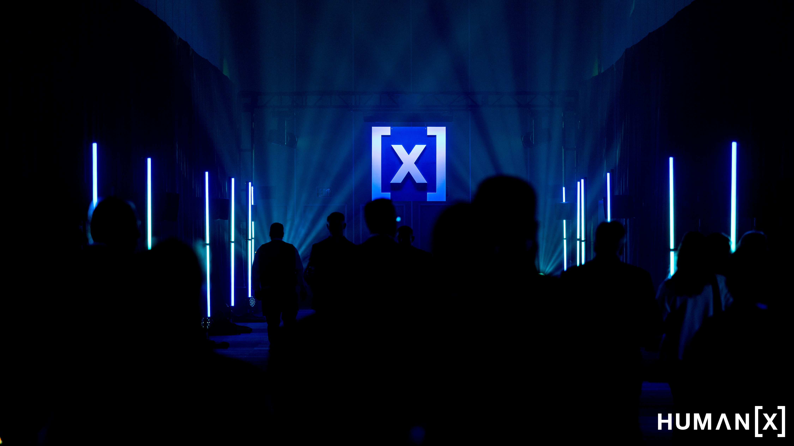

Select a Day
FOUR DAYS.
ONE READOUT EACH.

DAY 1
Live
April 6, 2026
What happened at the biggest AI conference — and what it actually means for your work
Spatial AI, the five-layer AI stack, and why marketing is the canary in the coal mine for every other function.
Read Day 1 →

DAY 2
Live
April 7, 2026
AI stopped being a concept. On Day 2, it started being a coworker.
Agentic AI, how the organizations winning at AI figured out deployment, and why governance stopped being optional.
Read Day 2 →
DAY 3
Live
April 8, 2026
AI stopped being about what the technology can do — and started being about who gets to use it.
Everyone is building now, reliability is the real race, and the workforce gap is widening fast.
Read Day 3 →
DAY 4
Live
April 9, 2026
AI stopped being a strategy conversation and became an operations question.
From pilot to production, the org chart is reshaping, and governance became a competitive advantage.
Read Day 4 →